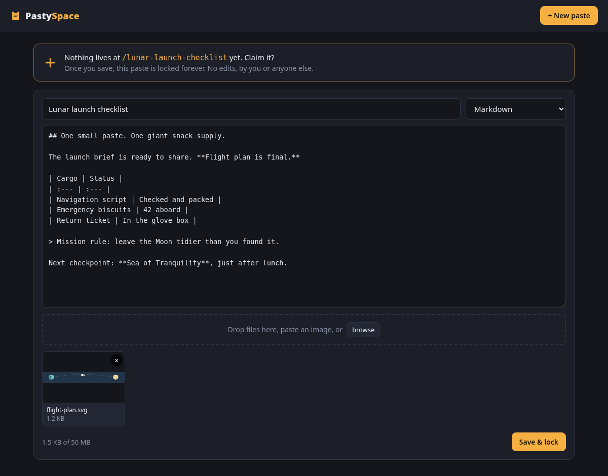

Code that reads
like code.
Automatic language detection or a format you choose. Syntax highlighting, line numbers, wrapping, and raw text when you need it.
PythonJSONBashJavaScript
Built for the everyday “here, have a look at this.” A few thoughtful features. Very little ceremony.
Paste text or code. Drop a screenshot straight from your clipboard. Drag files onto the page, or use the file picker.
Text and attachments can travel together in one paste. Images, audio, and video display inline when your browser supports them. Other files get a download link.

Automatic language detection or a format you choose. Syntax highlighting, line numbers, wrapping, and raw text when you need it.
Render Markdown, preview HTML in a sandbox without scripts, or turn rich text from Word and web pages into Markdown. Switch between rendered text and source.
Get a random three-word URL, or visit an unused address to claim
it. Names like /mission-notes beat reading a long
ID aloud.
The app rejects edits and overwrites after saving. Whoever opens the link sees the same saved paste. Need a revision? Make a new paste.
Pipe text from a command, send a file with curl, or claim a URL
directly. Read plain text back from /raw/your-name.
A Flask app, a SQLite database, and locally bundled browser libraries. Run the included Docker Compose setup on a machine you control.
PastySpace is a small sharing tool. Here’s what to expect before you give it a home.
Give those snippets somewhere to land.